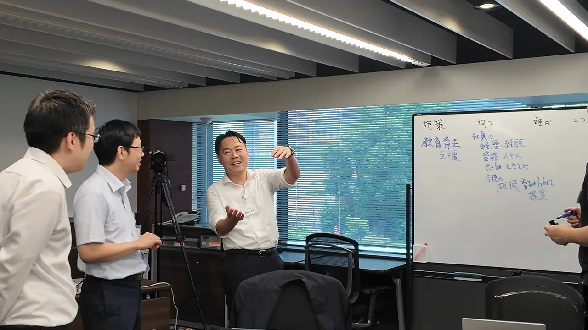
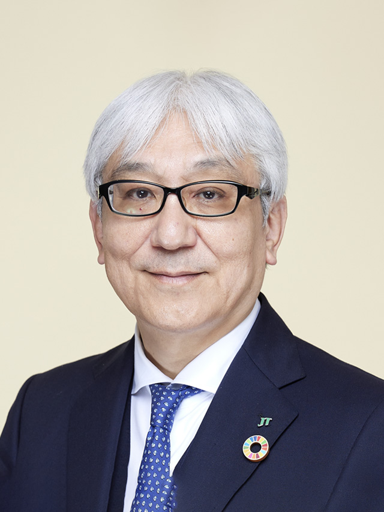

プライム上場企業の参加多数。
経営の実践を知る。次世代経営者を育てる学びを、会場で体感。
不確実な時代に、自らの信念を持ち、経営の意思決定を担う人材をどう育てるか。エグゼクティブ・マネジメントコース（EMC）では、経営者としての決断軸と信念を育む学びを重視しています。
今回は、日本たばこ産業株式会社の社友・元取締役会長である岩井睦雄氏の「経営者講演」を見学いただけます。経営の第一線を経験した講師による講義と、参加者の学びの雰囲気に触れ、次年度の派遣を検討する機会としてご活用ください。
EMCとは（概要）
EMC（エグゼクティブ・マネジメントコース）は、日本能率協会が提供する、少人数選抜・企業推薦制の次世代経営者育成プログラムです。本部長・事業部長・部長など、将来の経営を担う人材を対象に、経営者としての視座、意思決定の軸と信念を育みます。
約8か月にわたり、最先端の経営知識やリベラルアーツ、異業種の参加者との討議、経営者・メンターとの対話、実践的なプロジェクトを通じて学びます。プライム上場企業の次世代経営者も多数参加し、自社の枠を越えた視点から経営を考える機会を提供します。
日本を代表する企業が、次世代の経営者を送り出している。
プライム上場企業の参加多数。EMCには、製造業、情報通信、商社、金融、交通・インフラなど、幅広い業種から経営幹部候補が参加してきました。
異業種の参加者との討議や経営者との対話を通じ、自社の枠を越えて経営を考えることもEMCの特長です。今回のオブザーブは、こうした研修への派遣を検討するために、実際の講義と学びの雰囲気を確かめる機会です。

過去参加企業（一部）
- アイシン
- アソシエイトエナジー
- ＳＣＳＫ
- NECソリューションイノベータ
- NECネッツエスアイ
- オリンパス
- 花王グループカスタマーマーケティング
- カシオ計算機
- キッツ
- キリンホールディングス
- 京セラコミュニケーションシステム
- クボタ
- クラレ
- 構造計画研究所
- サッポロビール
- 島津製作所
- ジュピターショップチャンネル
- 人事院
- 住友商事
- 関ケ原製作所
- 高砂熱学工業
- 竹中工務店
- 東急電鉄
- 東京エレクトロン
- 東京ガス
- 東京地下鉄
- 日揮ホールディングス
- ニチレイフーズ
- 日鉄ソリューションズ
- 日本信号
- 日本生命保険
- 日本製薬
- 日本郵便
- 東日本旅客鉄道
- フジテック
- プロスパィラ
- ポッカサッポロフード＆ビバレッジ
- ホッカンホールディングス
- 三菱ケミカル
- 三菱総研DCS
- 八洲電機
- ヤマハ
- ゆうちょ銀行
（法人格略、一部、会社名当時）※50音順
※上記はEMC本コースの過去参加実績です。今回のオブザーブ参加企業や推薦企業の一覧ではありません。
インタビュー動画
第３７期インタビュー
第３７期インタビュー（1分30秒）
OBインタビュー（上野様）
OBインタビュー（上野様）（約4分）
OBインタビュー（森様）
OBインタビュー（森様）（約2分25秒）
こんな課題をお持ちの方へ
- 事業責任者から経営者へ、視座を高める育成機会を探している
- 知識の習得にとどまらず、自らの経営観や信念を育む研修を検討したい
- 派遣を決める前に、講師の指導や参加者の学びの様子を確かめたい
見学で得られること
- 岩井氏の経営者講演を通じ、EMCの実践知を重視する学びに触れる機会
- パンフレットだけでは伝わりにくい、実際の講義の雰囲気
- 自社の経営幹部育成とコースの適合性を検討するための材料
開催概要
- 開催日
- 2026年12月18日（金）
- 講義時間
- 9:30～11:30
- 会場
- 日本能率協会 研修室204（東京都港区芝公園）
- 参加形式
- 会場での講義見学
- 参加費
- 無料
- 主催
- 一般社団法人日本能率協会
- 参加対象
- 2027年度の派遣を検討している人事部門の責任者・担当者、および2026年度の参加者を派遣している企業の派遣責任者等
プログラム
講義オブザーブ 経営者講演
講師：岩井睦雄 氏（日本たばこ産業株式会社 社友・元取締役会長）
EMCの実際の講義をご見学いただきます。コース内容や派遣に関するご相談は、事務局へお問い合わせください。
講師紹介

岩井 睦雄 氏
日本たばこ産業株式会社 社友・元取締役会長／EMCメンター
1983年に日本専売公社へ入社。日本たばこ産業（JT）で経営企画部長、経営戦略部長、食品事業本部長などを歴任し、事業運営と全社戦略の双方に携わってきました。
JT International S.A.のExecutive Vice President、JTの企画責任者、たばこ事業本部長を経て、代表取締役副社長、取締役副会長、取締役会長を歴任。国内外の事業や経営企画を担い、グローバル企業の経営に携わった経験を有します。
現在は日本たばこ産業株式会社の社友。EMCでは、経営経験豊富なメンターの一人として参加者の学びを支えています。事業責任者としての経験と全社を見渡す経営の視点を併せ持つ講師の講演を通じ、EMCが大切にする実践知に触れていただけます。
お申し込み
無料見学のお申し込み申込フォームから、EMCの2026年12月18日「経営者講演」の見学希望をお知らせください。受付可否・見学時間等は事務局へご確認ください。
他社研修・セミナー団体、コンサルティング団体からのお申し込みは対象外です。申込状況等によりお受けできない場合があります。研修資料のお持ち帰りはできません。
お問い合わせ：エグゼクティブマネジメントコース事務局
一般社団法人日本能率協会 経営・人材革新センター内
担当：川口・田倉 E-mail：yoshiki_kawaguchi@jma.or.jp